영사기능사 (2002-07-21 기출문제)
1과목: 전기일반
1. 다음 중 전압 0.1[㎷]는 몇 [㎶]인가?
- 1
- 10
- 100
- 1000
(정답률: 알수없음)

2. 옴의 법칙을 옳게 나타낸 식은?
- 전압 = 전류 × 저항
- 전압 = 저항 ÷ 전류
- 전압 = 전류 ÷ 저항
- 전압 = 전류 x 전력
(정답률: 알수없음)
3. 그림의 회로에서 전류 I의 값은?
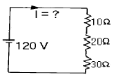
- 2[A]
- 18[A]
- 20[A]
- 180[A]
(정답률: 알수없음)
4. 동(銅)선의 단면적을 2배, 길이를 2배로 했을 때 전기저항은 처음의 몇 배인가?
- 2배
- 1/2배
- 1/4배
- 변하지 않는다.
(정답률: 알수없음)
5. 교류란 어떤 전기인가?
- 크기와 방향이 일정한 전기이다.
- 크기와 방향이 주기적으로 변하는 전기이다.
- 직류와 충격전류가 합친 전기이다.
- 맥류와 교류가 섞인 전기이다.
(정답률: 알수없음)
6. 60[Hz], 2극인 교류 발전기의 회전수[rpm]는?
- 900
- 1200
- 1800
- 3600
(정답률: 알수없음)
7. 교류에서 유효전력을 나타내는 식은? (단, E는 전압, I는 전류)
- EI
- EI·sinθ
- EI· cosθ
- EI·tanθ
(정답률: 알수없음)
8. 저항 R[Ω]에 전류 I[A]를 t[sec]시간 동안 흘릴 때 저항 중에서 소비되는 전력량[J]은?
- W = IRt [J]
- W = I2Rt [J]
- W = IRt2 [J]
- W = IR2t [J]
(정답률: 알수없음)
9. 아래 그림은 고정 저항의 칼라를 나타낸 것으로 이 저항의 [Ω]수는 얼마가 되겠는가? (단, 제4위 표시치 허용차(％)는 생략한다.)
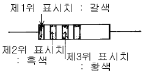
- 10[kΩ]
- 100[kΩ]
- 1000[kΩ]
- 10,000[kΩ]
(정답률: 알수없음)
10. 그림의 R1, R2와 같은 병렬회로에서 R1에 흐르는 전류 I1의 값은?
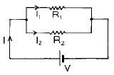
- R2xI/(R1+R2)
- R1R2xI/(R1+R2)
- R1R2/(R1+R2)xI
- (R1+R2)xI
(정답률: 알수없음)
11. 100[Ω]의 저항에 1[A]의 전류가 1분간 흐를 때 발생한 열량 [cal]은?
- 100[cal]
- 1,040[cal]
- 1,440[cal]
- 6,000[cal]
(정답률: 알수없음)
12. 기동 토오크가 가장 큰 특성을 지닌 전동기는?
- 직류 분권전동기
- 3상 동기전동기
- 3상 유도전동기
- 직류 직권전동기
(정답률: 알수없음)
13. 파장이 10m, 전파속도가 100m/s인 파동이 있다. 이 파동의 진동수는 얼마인가?
- 0.1 Hz
- 1 Hz
- 10 Hz
- 100 Hz
(정답률: 알수없음)
14. 가시광선 중에서 굴절률이 가장 큰 색은?
- 적색
- 노란색
- 청색
- 보라색
(정답률: 알수없음)
15. 빛의 일반적인 성질에 대한 설명중 맞는 것은?
- 빛의 회절, 간섭, 편광은 빛을 입자로 본 것이다.
- 광전효과는 빛을 파동으로 본 것이다.
- 빛이 반사할 때 반사의 법칙에 의하여 같은 매질에서 입사각과 반사각은 서로 같다.
- 빛이 서로 다른 매질로 굴절할 때 굴절의 법칙에 의하여 입사각과 굴절각은 서로 같다.
(정답률: 알수없음)
2과목: 렌즈 및 광원
16. 다음 중 볼록렌즈의 성질을 잘못 설명한 것은?
- 물체와 렌즈사이의 거리와 렌즈의 초점거리가 같으면 실물과 같은 도립실상이 생긴다.
- 물체가 초점 밖에 있을 경우에는 도립허상이 생긴다.
- 물체가 초점 안에 있을 경우에는 정립허상이 생긴다.
- 물체의 위치가 초점 밖에서 초점쪽에 가까와질수록 상이 커진다.
(정답률: 알수없음)
17. 초점거리 10cm인 볼록렌즈와 15cm인 오목렌즈를 겹쳐 놓을 때 이 결합 렌즈의 초점거리와 렌즈의 종류는?
- 6cm, 볼록렌즈
- 6cm, 오록렌즈
- 30cm, 볼록렌즈
- 30cm, 오록렌즈
(정답률: 알수없음)
18. 35mm 영사기로 영사거리 60척(尺), 영화화면(스크린)의 가로가 12척으로 영사하려면 초점거리가 몇 인치인 렌즈를 사용하면 되는가?
- 약 5인치의 렌즈
- 약 4인치의 렌즈
- 약 3인치의 렌즈
- 약 2인치의 렌즈
(정답률: 알수없음)
19. 필름의 센시토미터에 있어서 영상의 농도측정 3원색을 갖는 것은?
- 적색, 녹색, 청색
- 적색, 노랑색, 청색
- 청색, 보라색, 백색
- 적색, 파랑색, 검정색
(정답률: 알수없음)
20. 초창기 영사광원으로 사용되던 카본 아크는 다음 중 어느 방전 현상을 응용한 것인가?
- 불꽃 방전
- 코로나 방전
- 아크 방전
- 글로우 방전
(정답률: 알수없음)
21. 그림의 화살표 방향으로 빛이 진행되려면 a, b에 각각 어떤 렌즈를 놓아야 하는가?
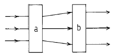
- 오목렌즈, 오목렌즈
- 오목렌즈, 볼록렌즈
- 볼록렌즈, 오목렌즈
- 볼록렌즈, 볼록렌즈
(정답률: 알수없음)
22. 다음 중 조도의 뜻은?
- 광원의 밝기
- 빛을 받는 면의 밝기
- 안경의 초점거리
- 광학현미경의 구별 가능한 최소 시각
(정답률: 알수없음)
23. 그림에 나타낸 기호는?
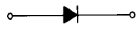
- SCR(사이리스터)
- TR(트랜지스터)
- Diode(다이오드)
- Triac(트라이액)
(정답률: 알수없음)
24. 다음 중 PN 접합의 항복 전압을 이용한 다이오드는?
- 터널 다이오드
- 제너 다이오드
- 가변 용량 다이오드
- 쇼트키 배리 다이오드
(정답률: 알수없음)
25. 트랜지스터의 베이스폭을 얇게 하는 이유는 다음 어느 특성을 좋게 하기 위해서 인가?
- 온도특성
- 잡음특성
- 전도특성
- 주파수특성
(정답률: 알수없음)
26. 그림과 같은 정류회로를 바르게 설명한 것은?
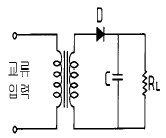
- C가 없으면 RL에 직류가 흐르지 않는다.
- C가 클수록 직류 전압이 커진다.
- C가 클수록 맥류가 커진다.
- RL가 클수록 맥류가 커진다.
(정답률: 알수없음)
27. 스피커의 출력 음압레벨이 높으면 일정입력에 의해서 발생하는 음압은?
- 크다.
- 작다.
- 같다.
- 평탄하다.
(정답률: 알수없음)
28. A, B 두 발성체에서 나오는 음파의 공기중에서의 파장의 비가 63 : 64일 때 A, B를 동시에 울려서 매초 4회의 맥놀이를 들었다면 각각의 진동수는?
- A = 63Hz(=c/sec), B = 64Hz(=c/sec)
- A = 64Hz(=c/sec), B = 63Hz(=c/sec)
- A = 252Hz(=c/sec), B = 256Hz(=c/sec)
- A = 256Hz(=c/sec), B = 252Hz(=c/sec)
(정답률: 알수없음)
29. 소리의 3요소란?
- 세기, 고음, 저음을 말한다.
- 세기, 높이, 잔향을 말한다.
- 세기, 높이, 음색을 말한다.
- 음정, 고음, 저음을 말한다.
(정답률: 알수없음)
30. 어떤 임의의 점에서 소리의 세기가 2x10-9[W/m2] 이었다면 이 소리의 세기 정도[IL]은 몇 dB인가? (단, 기준소리 세기 I0 = 10x10-13[W/m2])
- 30[dB]
- 33[dB]
- 60[dB]
- 66[dB]
(정답률: 알수없음)
3과목: 증폭기 및 녹음재생
31. 보통 음악에 쓰이는 소리의 진동수[Hz]는 얼마인가?
- 3 - 400
- 10 - 300
- 10 - 40000
- 30 - 4000
(정답률: 알수없음)
32. 그림과 같은 바이어스 회로의 명칭은?
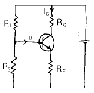
- 고정 바이어스
- 자체 바이어스
- 전류 되먹임 바이어스
- 전압 되먹임 바이어스
(정답률: 알수없음)
33. 그림은 눈의 구조를 나타낸다. [ ]안에 알맞는 것은?
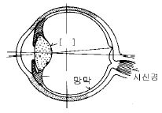
- 홍채
- 수정체
- 맥락막
- 황반점
(정답률: 알수없음)
34. 영사거리가 30m이고, 영사 렌즈의 초점거리가 4인치일 때 스크린의 가로 폭은 약 얼마인가? (단, 영사창의 가로 폭은 21mm 이다.)
- 2m
- 4m
- 6m
- 12m
(정답률: 알수없음)
35. 영사기의 엑사이더 램프에 대하여 틀린 설명은?
- 교류, 직류 다 사용할 수 있다.
- 전압은 높고 전류가 약해서 불빛이 매우 밝다.
- 보통 20W-5W용으로 가스가 들어 있는 전구이다.
- 필라멘트는 단코일 직선상(像) 또는 호상(弧像)이다.
(정답률: 알수없음)
36. 다음 설명중 첸지오버(changeover) 차광판에 대하여 맞지 않는 내용은?
- A영사기는 차광판을 열고, B영사기는 차광판을 닫는 기계적인 조정기구이다.
- A영사기는 엑사이더 램프를 on 시키고, B영사기의 엑사이더 램프를 off 시킨다.
- 첸지오버 장치는 사운드 헤드(sound head)에 있다.
- 차광판의 스위치와 엑사이더 램프 스위치가 동시에 작동한다.
(정답률: 알수없음)
37. 영사기 영사용 셔터는 주엽과 부엽이 있는데 주엽(主葉)을 무엇이라 하는가?
- 스프라켓트
- 플리커 브레이드
- 마르테즈 크로스
- 메인 브레이드
(정답률: 알수없음)
38. 영사기에서 필름을 아파츄어에 밀착시키기 위한 것은?
- 플라이휘일
- 게이트판
- 스프라켓트
- 핀
(정답률: 알수없음)
39. 상영중 영사기 헤드머신부에서 불이 났다면 제일 먼저 할 일은?
- 극장 관리자를 부른다.
- 불이 다른 영사기로 옮기지 못하도록 한다.
- 매거진 뚜껑을 덮는다.
- 차광핸들을 닫고 영사기를 세운다.
(정답률: 알수없음)
40. 35mm 영사기에 대한 다음 설명중 틀린 내용은?
- 필름의 화면 폭은 22X16mm 이다.
- 사운드 트랙의 폭(음대)은 약 2.5mm이다.
- 필름의 1프레임은 16mm이다.
- 1프레임의 퍼포레이션홀은 4개이다.
(정답률: 알수없음)
41. 릴을 사용하는 영사기에서 처음 사용하는 프린트(영사용 필름)의 퍼포레이숀(필름 양쪽 구멍)에 약간의 기름칠을 하는 이유는?
- 필름을 보호하기 위해
- 영사기를 보호하기 위해
- 화면을 밝게하기 위해
- 녹음 재생이 잘되기 위해
(정답률: 알수없음)
42. 필름 잇기에 대하여 설명한 것으로 틀린 것은?
- 테이프접착 잇기가 필름수리 과정이 빠르다.
- 테이프접착 잇기의 장점은 영원히 떨어지지 않는다는 것이다.
- 테이프접착 잇기는 필름의 양면을 다 붙일 수 있다.
- 스프라이서(Splicer, 접착기)는 테이프만 사용한다.
(정답률: 알수없음)
43. 몇 프레임의 필름이 잘렸을 때부터 관객이 영화사운드(음향)에 이상을 느낄 수 있는가? (단, 35mm용 영사거리일 때)
- 1 프레임
- 2 프레임
- 3 프레임
- 4 프레임
(정답률: 알수없음)
44. 다음 ( )안에 알맞는 내용은?
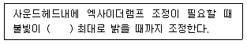
- 엑사이더 램프가 검게 되어
- 슬리트렌즈로부터 통과된 불빛이 음대에
- 쏠라셀(Solacell)이 한곳으로 모여
- 슬리트가 하얗게 바탕에 나타나
(정답률: 알수없음)
45. 영사에 있어서 마지막 점표식은 영사기의 전환신호이다. 설명이 바르게 된 것은?
- 1초 전 4 프레임안에 나타난다.
- 1초 후 4 프레임안에 나타난다.
- 5초 전 1 프레임안에 나타난다.
- 10초 후 4 프레임안에 나타난다.
(정답률: 알수없음)
4과목: 영사기와 필름의 구조원리
46. 영사기의 자동방화셔터의 역할에 대하여 맞는 설명은?
- 아크가 꺼졌을 때 동작한다.
- 모터가 섰을 때 동작한다.
- 필름이 끊어졌을 때 동작한다.
- 화면이 이중을 이루었을 때 동작한다.
(정답률: 알수없음)
47. 영사기에서 움직이지 않는 영상을 제시하고 다음에 그 영상을 지우기 위해 다시 암흑으로 제시하여 주므로써 정상적 화면을 이루게 하는 것은?
- 퍼포레이션·홀
- 스프라켓트의 톱니수
- 프레임
- 셔터
(정답률: 알수없음)
48. 모터로 필름을 감을 때 필름감는 속도의 설명으로 적합한 것은?
- 빨리 감을수록 좋다.
- 필름이 손상되지 않도록 적당한 속도로 감는다.
- 느리게 감을수록 좋다.
- 최대한 빠른 속도로 감는다.
(정답률: 알수없음)
49. 램프하우스의 작동이 시작되었을 때 다음 중 꼭 확인하여야 하는 안전 사항은?
- 마스크의 형태
- 게이트판의 밀착 여부
- 송풍장치의 작동 여부
- 말티스크로스의 조임 여부
(정답률: 알수없음)
50. 그림은 SCR의 기호를 나타낸 것이다. 그림에서 (A), (B), (C)의 알맞는 명칭은?
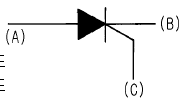
- (A)게이트, (B)애노드, (C)캐소드
- (A)캐소드, (B)게이트, (C)애노드
- (A)게이트, (B)캐소드, (C)애노드
- (A)애노드, (B)캐소드, (C)게이트
(정답률: 알수없음)
51. 크세논 정류기를 설치하려고 한다. A정류기와 B정류기 2대를 설치할 때 적당한 방법은?
- 벽으로 부터 바짝 붙여 놓고 정류기 사이를 10cm이상 떼어 놓는다.
- 벽으로 부터 10cm이상 떼어 놓고 정류기 사이를 바짝 붙여 놓는다.
- 벽으로 부터 20cm이상 떼어 놓고 정류기 사이를 10cm 떼어 놓는다.
- 벽으로 부터 바짝 붙여 놓고 또한 정류기 사이도 바짝 붙여 놓는다.
(정답률: 알수없음)
52. 크세논 램프의 아래 그림에서 +측은 어디인가?
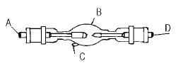
- A
- B
- C
- D
(정답률: 알수없음)
53. 35mm 필름에 대한 다음 설명중 옳은 것은?
- 화면의 길이를 말한다.
- TV 화면과 같이 대각선의 길이를 말한다.
- 화면의 폭을 말한다.
- 필름의 폭을 말한다.
(정답률: 알수없음)
54. 상부 매거진에 필름을 삽입하려할 때의 동작으로 다음 중 올바른 설명은?
- 필름의 감광유제 쪽은 램프하우스쪽, 화면은 거꾸로, 사운드 녹음줄은 영사기사쪽에 오게 한다.
- 필름의 감광유제 쪽은 램프하우스 반대편, 화면은 거꾸로, 사운드 녹음줄은 영사기사쪽에 오게 한다.
- 필름의 베이스는 장내로, 화면은 똑바로, 사운드녹음 줄은 영사기사쪽에 오게 한다.
- 필름의 베이스는 장내로, 화면은 거꾸로, 사운드녹음 줄은 영사기사에게서 멀리 기계안쪽에 놓이도록 한다.
(정답률: 알수없음)
55. 영화촬영에 사용되는 필름으로 잘못 설명된 것은?
- 얇은 투명체 바탕에 감광성 사진유제를 칠한 것이다.
- 필름의 시성곡선을 세번 그리는 방법과는 관계없이 덴시토 미터에 의해 측정된다.
- 필름의 폭과 필름 톱니 구멍의 크기, 위치 등의 치수는 규격상 국제적으로 표준화되어 있다.
- 일반적으로 네가필름을 사용한다.
(정답률: 알수없음)
56. 35mm필름 양편에 구멍이 있는데 이를 퍼포레이숀홀 또는 구멍이라 한다. 1프레임에는 몇 개의 퍼포레이숀홀이 있는가?
- 4개
- 5개
- 6개
- 8개
(정답률: 알수없음)
57. 영화를 처음 발명한 사람은?
- 갈릴레오 갈릴레이
- 아인시타인
- 존킨스와 알메트
- 토마스 에디슨
(정답률: 알수없음)
58. 그림은 정류 회로를 나타낸 것이다. 바르게 설명된 것은?
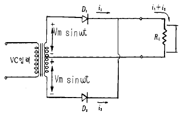
- 단상반파 정류회로
- 단상전파 정류회로
- 브리지형 단상 전파회로
- 3상 반파 정류회로
(정답률: 알수없음)
59. 영사필름의 아날로그 음대형식으로 현재 많이 쓰이는 것은?
- 면적형에 쌍줄식
- 농도형에 외줄식
- 농도형에 쌍줄식
- 면적형에 엇서기형
(정답률: 알수없음)
60. 영화가 탄생된 초창기에 필름자체에 소리를 녹음하고 또한 재생시킬 수 있는 여러가지의 설계를 발명한 사람은 어네스트 라우스트(Ernest Lauste)이다. 설계의 골자를 완성한 년도는?
- 1893년
- 1902년
- 1907년
- 1915년
(정답률: 알수없음)